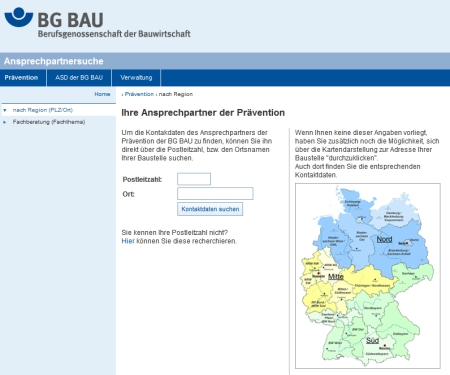

Berufsgenossenschaft
der Bauwirtschaft, Berlin
Prävention
Präventions-Hotline der BG BAU: 0800 80 20 100
(gebührenfrei)
Internet: www.bgbau.de
E-Mail: praevention@bgbau.de
| Fachliche Ansprechpartner für Ihren Betrieb vor Ort
finden Sie unter: www.bgbau.de – Ansprechpartner/Adressen – Prävention |
|
| Um die Kontaktdaten des Ansprechpartners der Prävention der BG BAU zu finden, können Sie ihn direkt über die Postleitzahl bzw. den Ortsnamen Ihrer Baustelle suchen. Wenn Ihnen keine dieser Angaben vorliegt, haben Sie zusätzlich noch die Möglichkeit, sich über die Kartendarstellung zur Adresse Ihrer Baustelle "durchzuklicken". Auch dort finden Sie die entsprechenden Kontaktdaten.  |